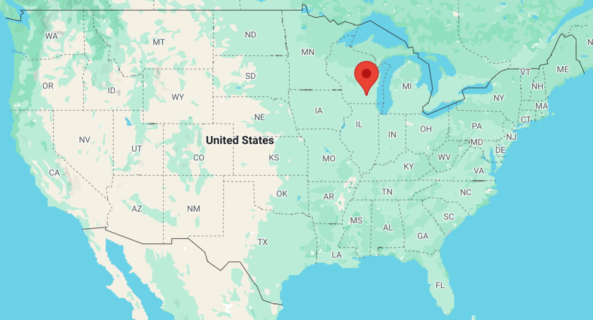
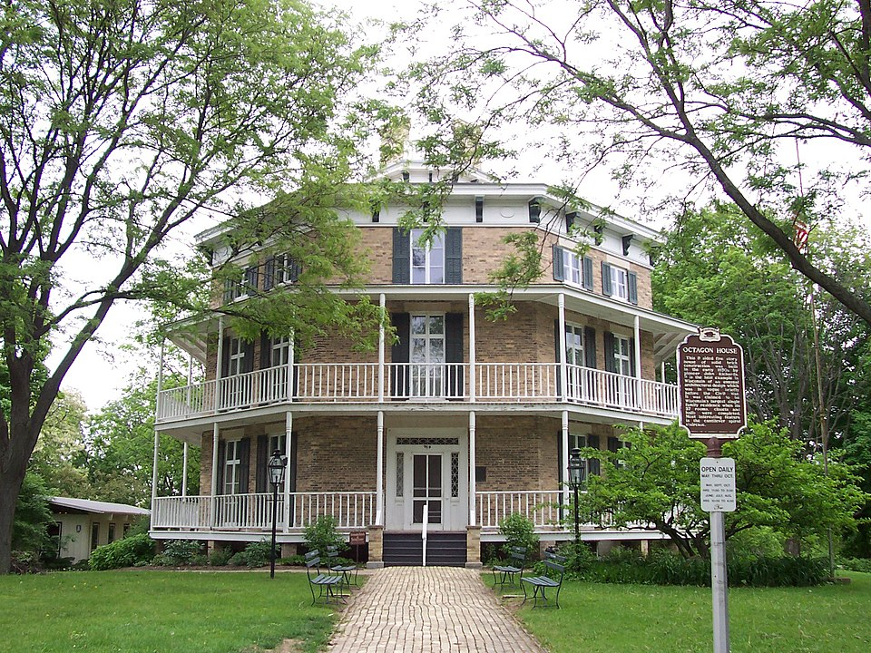
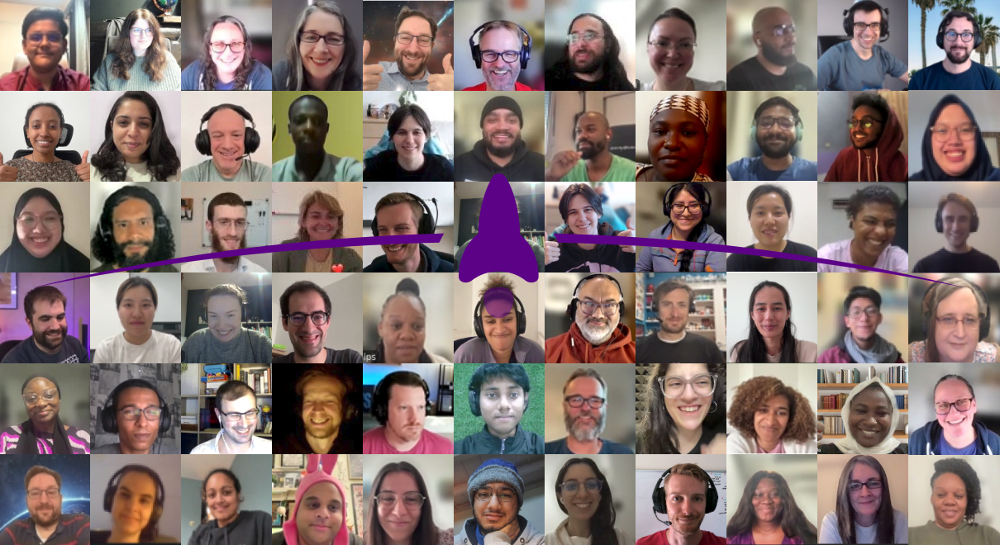
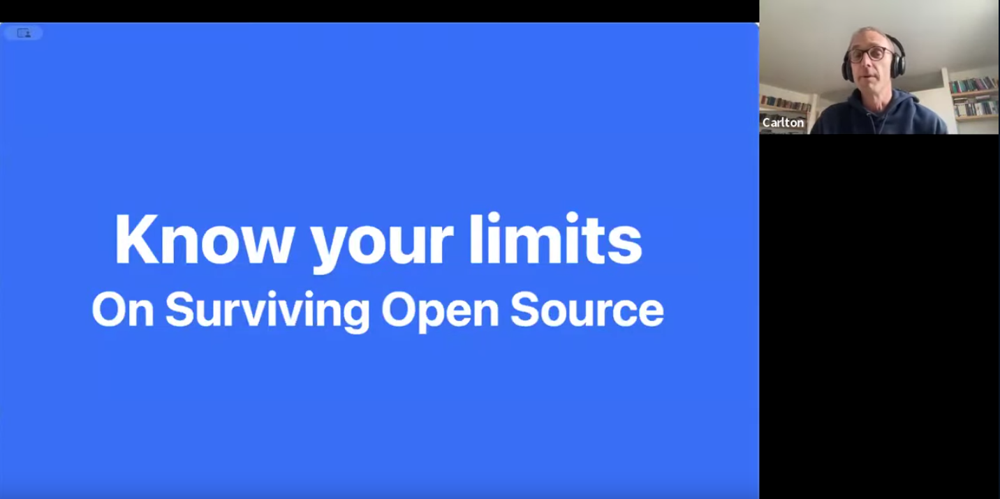
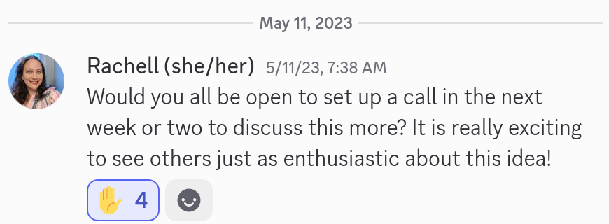
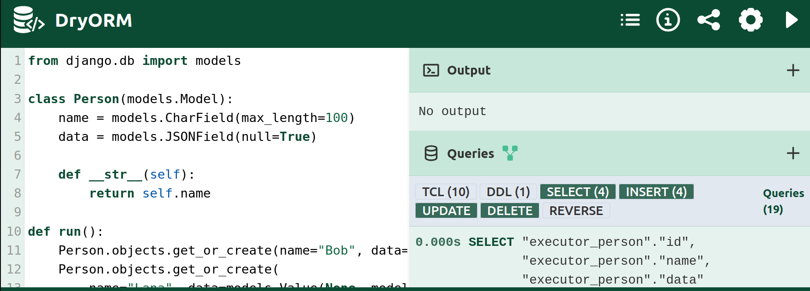
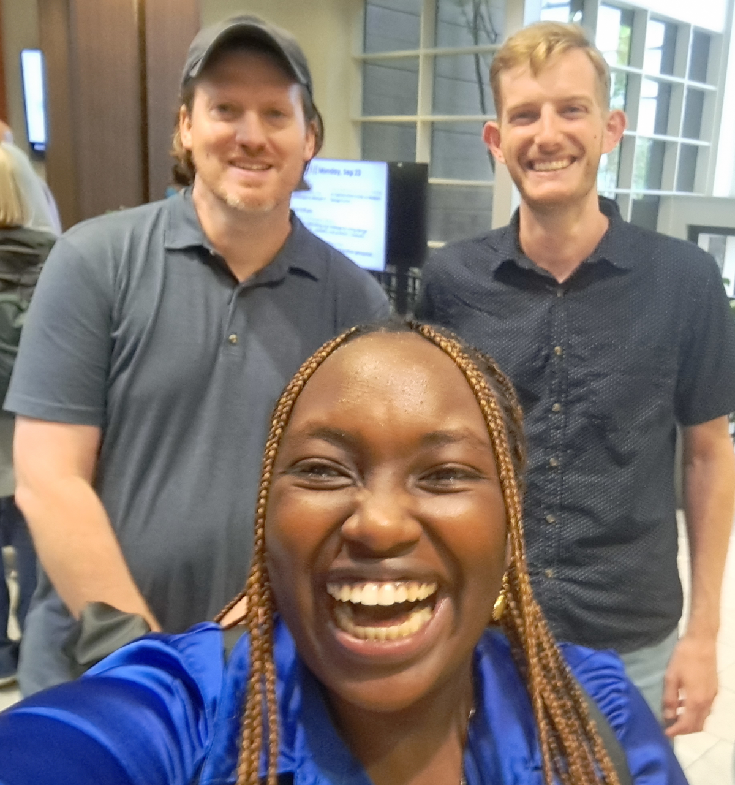
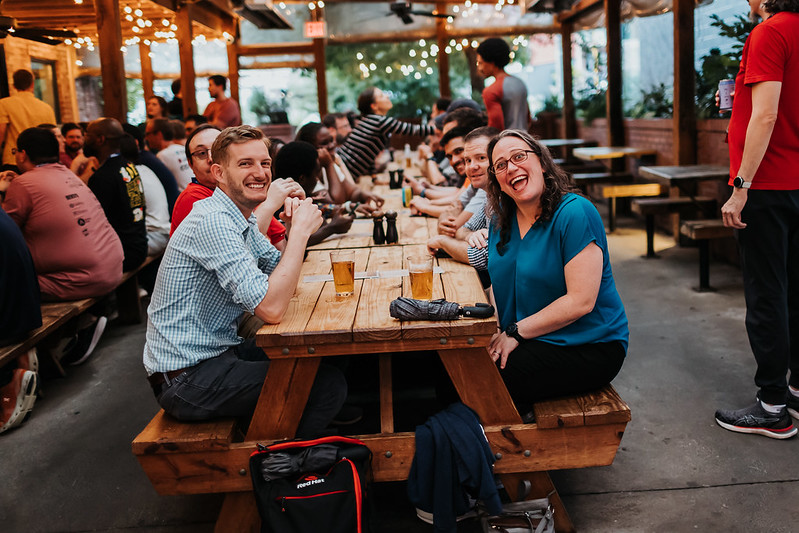

Contributing to the Django community
by Tim Schilling
I am from Watertown, WI, USA

23,000 people and 750 people/km2
Arusha: 617,000 people and 2,300 people/km2
Watertown is famous for...
- First Kindergartern in the US
- The Octagon House???

Octagon House, 2007 by Iulus Ascanius
Community Involvements
Current
- Django 6.x Steering Council
- Djangonaut Space🚀 admin
- Django Commons admin
- django-debug-toolbar
- django-simple-history
- django-auth-adfs
Past
- DjangoCon US organizer
- DEFNA Secretary
- Djangonaut Space🚀 navigator
- Google Summer of Code mentor
- Answering questions on Forum & Discord
- Django Discord moderator
Raise your hand if you follow the Steering Council
Steering Council
Carlton Gibson
Emma Delescolle
Frank Wiles
Lily Acorn
Tim Schilling
Steering Council focus
- Improve third-party story
- Improve contributor experience
Steering Council focus
- Improve third-party story
-
- Improve contributor experience
Steering Council focus
- Improve third-party story
- Improve contributor experience
-
Have questions?
Raise your hand if you've heard of Django Commons
Django Commons admins
Daniel Moran
Lacey Henschel
Ryan Cheley
Tim Schilling
Storm Heg
Django Commons
- django-commons.org
- Supports 12 packages today
- Improve the Python package maintenance experience
- Community home for community packages
- Automate as much as possible
Django Commons focus
- Project introduction videos
-
- Help find new contributors
Django Commons focus
- Project introduction videos
- Help find new contributors
-
Get involved with Django Commons
Djangonaut Space 🚀

Djangonaut Space🚀
- 8-week mentorship program for contributing to Django
- The next session is October 1st, 2025
- We always need Navigators!
- Find more info at djangonaut.space
Djangonaut Space🚀
- 8-week mentorship program for contributing to Django
-
- Navigator == Technical mentor
- Captain == Community mentor
- Djangonaut == Mentee
- Star == Stellar contributor to Django community
- The next session is October 1st, 2025
- We always need Navigators!
- Find more info at djangonaut.space
Djangonaut Space🚀
- 8-week mentorship program for contributing to Django
- The next session is October 1st, 2025
-
- Applications open: September 10th, 2025
- Applications close: September 17th, 2025
- We always need Navigators!
- Find more info at djangonaut.space
Opportunities to code (part 1)
- Contribute code to Django
- Triage new tickets
- Review Pull Requests (PRs)
- Help translate Django
- Discuss new feature ideas
Opportunities to code (part 1)
- Contribute code to Django
-
- Triage new tickets
- Review Pull Requests (PRs)
- Help translate Django
- Discuss new feature ideas
Opportunities to code (part 1)
- Contribute code to Django
- Triage new tickets
-
- Review Pull Requests (PRs)
- Help translate Django
- Discuss new feature ideas
Opportunities to code (part 1)
- Contribute code to Django
- Triage new tickets
- Review Pull Requests (PRs)
-
- Help translate Django
- Discuss new feature ideas
Opportunities to code (part 1)
- Contribute code to Django
- Triage new tickets
- Review Pull Requests (PRs)
- Help translate Django
-
- Discuss new feature ideas
Opportunities to code (part 1)
- Contribute code to Django
- Triage new tickets
- Review Pull Requests (PRs)
- Help translate Django
- Discuss new feature ideas
-
Opportunities to code (part 2)
Contribute to the community-run sites!
Opportunities to code (part 3)
- Contribute to other Python and Django packages!
- djangopackages.org
- Look for packages that interest you
- Consider packages you use regularly
Opportunities to code (part 4)
- Create your own!
- Look for a need that's not being met
Opportunities to organize
- Run for the Board and Steering Council
- Volunteer for a Working Group
- Be a conference organizer
- Volunteer with DjangoGirls+ and local meet-ups
Opportunities to organize
- Run for the Board and Steering Council
- Volunteer for a Working Group
-
- Be a conference organizer
- Volunteer with DjangoGirls+ and local meet-ups
Opportunities to organize
- Run for the Board and Steering Council
- Volunteer for a Working Group
- Be a conference organizer
-
- Conferences are vital to the Django community!
- Send an email that you're interested
- hello@djangocon.africa, 2025@djangocon.eu, hello@djangocon.us
- Volunteer with DjangoGirls+ and local meet-ups
Opportunities to organize
- Run for the Board and Steering Council
- Volunteer for a Working Group
- Be a conference organizer
- Volunteer with DjangoGirls+ and local meet-ups
-
Opportunities to engage
Opportunities to engage
Opportunities to create content
Where to invest your time?
Participate where the benefits for you most outweigh the costs

"Know Your Limits: On Surviving Open Source" by Carlton Gibson
What are the benefits of OSS for you?
Why are you participating in open-source?
What motivates you?
What interests you?
What skills do you want to learn?
Look for alignment between your needs and the opportunity's outcomes
What opportunities are currently available?
- DSF Board and Steering Council hold elections
- Various orgs, working groups and teams are invite-only
- Major conference roles are selected months in advance
Entry level opportunities
- Triage issues, contribute PRs, review PRs
- Volunteer at events and conferences
- Write blog posts about your experiences
- Ask and answer questions on the Forum or Discord
- Participate in conversations on Social Media
Over time, you'll find opportunities unique to you

Rachell setting up an initial call for Djangonaut Space🚀

The Lilian Method
Contribute where it helps you on your journey
Evaluating opportunities
- Don't try to do all the things
- Do try to be consistent with periodic contributions
- Engaging over time will lead to more opportunities
- Choose opportunities that build towards your goals
Why should you participate in OSS?
You'll learn from others
An enthusiastic and open mindset increases learning
"Interest Matters: The Importance of Promoting Interest in Education"
pmc.ncbi.nlm.nih.gov/articles/PMC5839644/

Velda Kiara: Celebrating wins as they are
Jeff Triplett: Look at issues holistically

Rachell Calhoun: Calling people in
Photo credit: Bartek Pawlik - bartpawlik.format.com

Natalia Bidart: Being more welcoming to others
Why should you participate in OSS?
Why should you participate in OSS?
It will help you in your career
Why should you participate in OSS?
Why should you participate in OSS?
It introduces you to new people and grows your network
A strong sense of community is correlated with better mental health
What I want you to take away
- Consistency and perseverance are key
- Self-reflect on your goals and desires
- Find alignment between your goals and OSS
- Engaging will reveal more opportunities
- You will learn and grow
Ahsanteni
schillingt@better-simple.com
@CodenameTim
@CodenameTim@mastodon.social